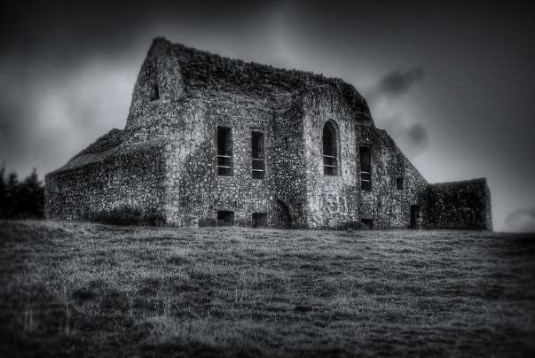

Index
-
1. Logline, Tone & Mood
Logline
An 18th-century mystic life-story of an unlovable pagan woman who thrives as a brothel keeper, in a politically unstable Ireland, threatened by death and secret societies.
Tone & Mood
THE WITCH (2015) meets TABOO, but with two strong female characters like ALIAS GRACE and HARLOTS, and a dark Sherlock-Holmes crime investigation like THE ALIENIST. A series that mixes paganism, Irish folklore & mythology, superstition, war, pride and love.
-
2. Series Overview, Summary
Overview
Darkest Kelly is a historical/fantasy TV drama based on true events and Irish folktales about Dorcas Stuart Kelly (Darkest Kelly), who was publicly hanged and burned in 1761 for being a witch, brothel keeper and the first Irish serial killer!
The series portrays real events and embellishes the Irish culture matched with a fast paced, thrilling murder mystery and fight for human rights.
The series are meant to give a more realistic and mature approach about witchcraft, different than all the others. It goes into psychological and philosophical thinking which takes a critical stand on social, political and even existential themes.
Summary
…A young woman raised as a pagan and forced to become a nun escapes the abbey to start a new journey as a brothel-keeper…
…An ex-noble who lost everything, lies in order to find a wealthy suitor, but thrives as a harlot instead…
…A conflicted man AND a naïve young priest must work out their differences when stumble in a murderer-investigation that leads into a satanic and powerful secret society… and the enemies are everywhere.
All against the background of a divided Ireland, with the “orange protestants” against the rebellion who fight against the Act of Law and the English influence. -
3. Why Now, Series Appealing
Why Now?
This is a medieval real story that never was told, in a period and a country not exposed enough. A story that offers justice for all women who were hanged and burned as a witch, with a more realistic input about the old religion. With the current after-pandemic situation we are living now, Darkest Kelly is the perfect escapism for the wide audience of The Witcher, with a more mature approach of fantasy/historical series such as Vikings, Taboo and Outlander, but with mainly strong-female cast and a dark twist. Besides, it is also current in its inclusive message intrinsic in isolated and lonely characters who come together towards a common goal.
Series Appealing
Puzzled structure, double-faced villains and Paranormal mixed with important historical figures such as: William the Orange, Jonathan Swift, the poet Laetitia, the pirates Anne Bonny and Mary Read, and others who will have a very important presence, adding a historical meaning that makes it more attractive not only to the viewers eager for entertainment, but also to an audience interested in a more cultured product that invites reflection.
-
4. Synopsis
Synopsis
In 1761, Ireland, a woman is accused of being a Witch, Brothel keeper and the first Irish serial killer. This is her story!
A mixed of fiction with reality about an unlovable pagan woman who runs away from a prison-like nuns’ abbey where she was being tormented, to start a new life in Dublin.
There she will engage in dangerous relationships, rise in nobility, start her own business as a brothel keeper and try to find and save other pagans from the scaffold, while the town is threatened by mysterious deaths during a tense period of political instability and Masonic secret societies, which members are rich, powerful and fanatic with the occult.
A sacrifice must be made. . .
Enemies are everywhere. Trust no one. . .
They’re above the law and do not play by the rules. . .
-
5. Visual References
Visual References
-
6. Characters
Characters
-
7. Episodes and Further Seasons
Further Seasons:
Inspired by the death of Dorcas Kelly, the 13 harlots-witches start a new plan to revenge her and fight the secret society who continue to kill. While Maria initiates a new journey in the sea, with a group of female pirates leaded by the real characters Anne Bonny and Mary R Nolan, who used to be good and pure change sides and has now engaged with them. Simon is now Earl of Carhampton and holds dangerous transdimensional dark secrets that unravels more of Dorcas past…
New Main Character
Peg Plunkett (1727 – 1797)
Peg (Margaret Plunkett) is one of the 13 harlots in this story. She was the Ashley Madison of her day. An Irish brothel-keeper in Dublin who wrote her memoir in 3 volumes.
She is the youngest in the Brothel and years later will open her own brothel with her friend Sally Hayes in Drogheda Street. She’s one of eight of her mother 22children who survived her childhood and travelled to Dublin after her mom deaths and brothers abuse, only to be abused again by other man to whom she was fully dependent. She became pregnant very early and lost 6 babies. After this, she never marries again and earns her independence by adopting the name Plunket from a secret nobleman (Joseph Leeson, 2nd Earl of Miltown).
-
8. Research: Real facts, Timeline
Real Facts
Corruption, witches’ trials & Catholics persecution
During William, the Orange period in Ireland, the Catholics were persecuted, banned from their lands and couldn’t vote, run schools, participate in the parliament or owning property.
William Conolly (1662-1729) was the Speaker of the House of Commons, lawyer and the wealthiest man in Ireland, who made his fortune from following the confiscations by the crown of lands belonging to Jacobite supporters. He built the first Palladian house in Ireland, the Castletown House. In 1725 William builds the dark lodge of the Hellfire Club, founded years later, around 1737, by Richard Parsons, 1st Earl of Ross.
The Christ Church crypt was made into a market, meeting place for business and even a pub (as a 1633 letter shows: …”a tippling place for beer, wine and tobacco.”). It is also known that women were both strangled and burned publicly, whereas men guilty of murder were hanged without the additional torture.
The Brothel was in Maiden Tower on Cooper Alley and was owned by Dorcas Kelly and Maria Lewellyn as her successor.
It is known that Maria was arrested, endured a trial and sentenced to death for procuring a child aged 12 or 13, Mary Neal for the use of Luttrell’s son, probably to cure him as people used to believe that sex with a virgin would cure venereal diseases. Mary was enticed into delivering a letter to Maria when she was raped. Other harlots supported Maria, claiming that the little girl was lying, and she was, at that tender age, a harlot herself. In the meantime, both of Mary’s parents were arrested for robbery and imprisoned, where Anne (Mary stepmother), who was heavily pregnant died. What became of Mary, her father and Maria after that we may never know…The Hellfire Club (or “Order of the Friars of St. Francis Wycombe”), was a name given to high secret society rakes established in Britain and Ireland in the 18th century. The clubs existed since 1719 and were rumoured to be meeting places for nobleman’s and people involved in politics, where they could take part in immoral acts.
The Irish Hellfire Club is in Mount Pellier Hill, Dublin: Its motto was: Do what thou wilt (Fais ce que tu voudras). It is also known that they drunk “scaltheen”, used to wear red uniforms, had a black cat as a mascot, used to leave a chair for the Devil in the garden, and their meeting place was Eager Tavern near the Castle. In this series, the Hellfire club stories and rumours are taken to the extreme, with a masonic tone, including misappropriation of money and corruption, killing, sacrifice of servants and prostitutes, blasphemy, occultism, devil worship and dark arts.
1690
People celebrate William the Orange victory each July, with oranges in sticks.
Flashback
(fiction) Dorcas childhood. / Flashbacks
1715
James Stuart (in exile) appeals to Pope Clement XI for help, for a Jacobite rising.
(fiction) Dorcas becomes a nun.
(fiction) Dorcas runs away from the Abbey.
1722
William Conolly (protestant) builds a mansion where he will give legendary parties.
1739 – 1741 Disease period.
Edmundo Burke: Art of oratory, Jonathan Swift: wrote masterpieces and became an independent part of the parliament in College Green.
(fiction) The hellfire Club is blamed for the disease period and the murders. Simon joins the club.
(fiction) Dorcas and Maria start their new business as brothel keeper while fighting against the club.
1741
George Frederick Handel (composer) is invited to play “Messiah” for the first time in Dublin. People say the music brings Gaelic + Anglo Irish world all in one piece.
1761
Dorcas Stuart Kelly dies hanged and burned alive in the stake on Gallows Road (now Bagget street). The prostitutes rioted in Cooper Valley for days after her execution.
Dorcas becomes the “green lady”, a spirit that haunts the city, crying for her lost baby.
Independent Revolutions, and secret societies in prol of an Irish Republic. (1791 – 1795)
End
-
9. Potential Locations to shoot
Potential Locations to shoot
Portugal
In Portugal there's 25%-30% of Tax Incentives for Film, with a minimum of 1m£ local spend!
They speak English, and you can also enjoy a warm weather, cheap prices, mountains, castles, palaces, abbeys, beaches, and some still very unknown mediaval towns. Portugal has also won the World Travel Awards 3 times and will increase the financial of clture to 2% of the state budget.
Spain
Spain offers 20% tax rebate of up to 4m£ per producion, with a minimum of 1m£ local spend! And 40% in the Canary Islands.
Spain has one of the most well-preserved medieval towns that remain untouched by time. Its majestic landscapes were part of Films and TV shows such as Game of Thrones, The name of the Rose, Star Wars, Perfume, Kingdom of Heaven, Indiana Jones and much more...
-
10. Writer's Statement
Writer's Statement
(Catarina César)
As a Portuguese female writer, I found my passion at the age of 13 through horror and drama films & series with social and existentialist themes.
Back in 2018, one year after being paid to write a feature script and completing my master degree in Film/TV Production and Management, I found myself wandering in Irish streets while pursuing more career opportunities, where I immediately fell in love with the culture, the people and their History. As any writer living the adventures of being in a new country, something was changing inside me. I got inspired by the short stories of secret societies, and women falsely accused of witchcraft and murder, and consequently Darkest Kelly emerged inside me as a story that was crawling inside me, yelling to be told, like a truth that must be known.
Since then, I took up the challenge of an extensive research of Irish History, mythology and occultism, and wrote 8 episodes including the TV pilot, built up this pitch deck, wrote and rewrote every script according to the different feedback I gathered over the year from professionals, non-professionals, teachers and recent PHD graduates in Irish Medieval History.
Over the last five years, I lived in three different countries, worked on set and in the office of several companies; in Development; Production, and Post-production, doing video editing, pre-production work, writing script reports, film reviews and managing a film festival along with industry professionals such as Caroline Goodall, Craig Conway and Garen Daly and worked as a production assistant and script supervisor in TV series, short films and one feature in England, Spain, and Portugal.
I personally, identify myself with my protagonist as we both lived our lives “trapped” in a small town with small-minded people; felt powerless with few or non-existing opportunities to thrive; and share the same beliefs that are judged, misunderstood and taboo, even nowadays. With Dorcas, I delve into the darkest recesses of my imagination and unravel the same core wounds as an unlovable young woman seeking her own identity in a small country that also fought for its independence and national identity from its big neighbour.
Darkest Kelly will be unlike any other period Drama out there. It is original for the nature of its strong female characters, double-faced villains, multi-layered structure inside Dorcas’ fractured state of mind, and a mixture of genres like any other period TV series are.
The diseased period brings us to a stygian world where horror and death are commonplace. Surrealism and experimental genres are found in the form of dreams, hallucinations, and psychological trauma. Vibrant Celtic atmosphere. Emotional themes. Rebellions. Politics. Temptation, sexual freedom and, deep relationships meet in the house of sins. A balance between paranormal and psyche. Those in power abuse it. Survival is tough as any woman, at any time, could be accused of witchcraft and suffer a cruel death for crimes they did not commit. Imprisonment, persecution, torture, sexual harassment, and a very thin barrier between good and evil. Resurrection of forgotten old folklore, myths and prophecies of Gods, curses, ghosts and demons that lurk there, and perhaps in all of us…
All of this with a transdimensional twist in the end.How far will a person go for their beliefs? How much will they endure to resist?
Darkest Kelly is the story I always wanted to write. The TV show that the audience currently needs, and I am the best person to do it.
-
11. Contact
Contact
Paul J. Alessi - Producer
Alessi Films
310-305-8901
paul@pauljalessi.comCatarina César - Writer
Alottabit Studios, LLC.
+44 (0) 756 146 1386
catarina@alottabitstudio.com